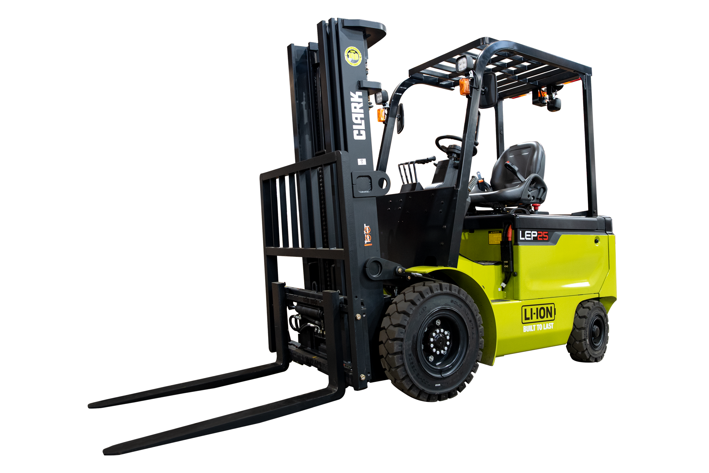
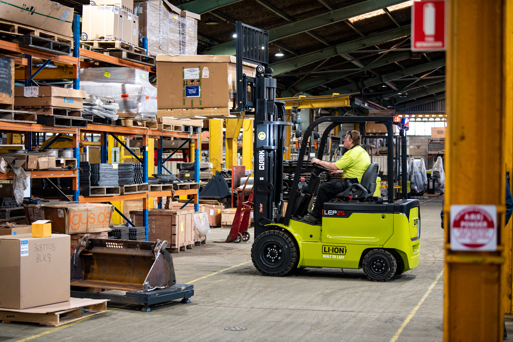
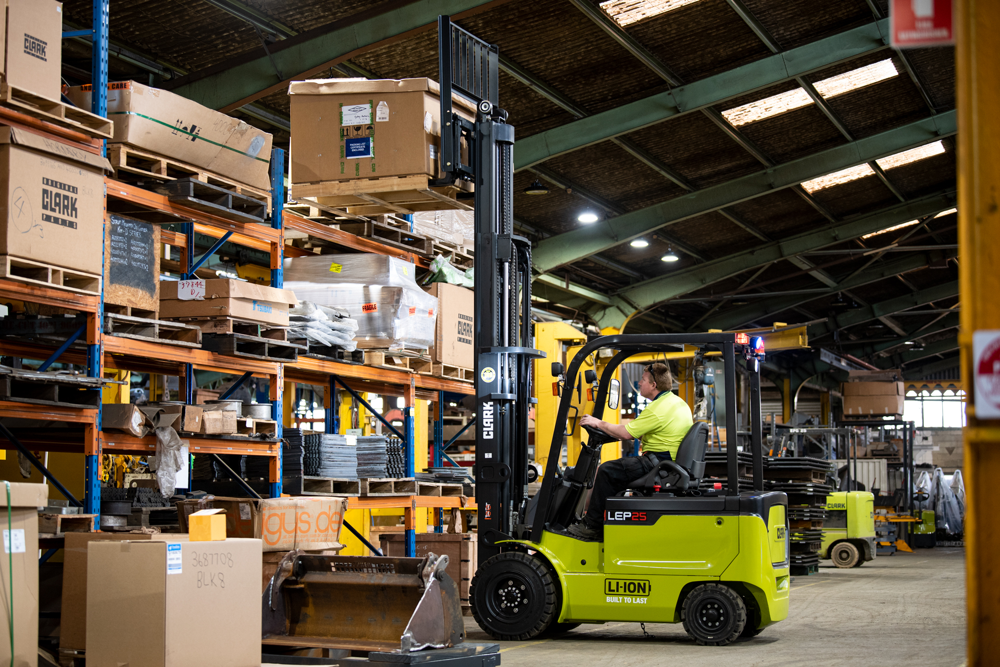

A câmara fria opera a -18°C. O operador usa luvas grossas. A empilhadeira a gás — usada há anos naquele frigorífico — libera monóxido de carbono a cada frenagem. O gestor sabe que isso é problema. O INSS e o eSocial também sabem. Mas trocar de máquina parecia complicado demais.
A Clark LEP mudou esse cálculo.
Zero emissão. Zero ruído de escapamento. Zero manutenção de bateria. E uma recarga completa em duas horas.
Empilhadeira Elétrica Clark LEP — Operador Caminhante, Bateria Li-Ion, 2.000 a 3.500 kg
Empilhadeira elétrica walkie com bateria lítio-íon, capacidade de 2.000 a 3.500 kg, recarga em 2 horas e zero emissões. Ideal para frigoríficos, supermercados, farmácias e armazéns indoor em Goiânia e Centro-Oeste.

Clark LEP — empilhadeira elétrica walkie, bateria Li-Ion, zero emissões, 2.000 a 3.500 kg
Por que a Clark LEP Series?
Zero emissões: operação segura em frigoríficos, câmaras frias, farmácias e ambientes controlados
Bateria Li-Ion com oportunidade de carga: recarrega em pausas curtas — autonomia de até 24 horas por dia
Recarga completa em 2 horas: parada de almoço ou turno noturno resolve
Zero manutenção de bateria: sem água destilada, sem inspeção diária, sem custo oculto
Motor AC brushless: durabilidade superior, menos calor, menos manutenção
3.500 kgCapacidade máxima — LEP35
2hRecarga completa — bateria Li-Ion
0Emissões — 100% elétrica
LEP20s, LEP25, LEP30 ou LEP35: qual modelo para sua operação
A Clark LEP Series cobre de 2.000 a 3.500 kg com quatro modelos. Todos compartilham a mesma tecnologia de bateria Li-Ion e motor AC brushless. A diferença é a capacidade nominal e o dimensionamento estrutural do mastro.
Comparativo Clark LEP Series — Modelos e capacidades
Modelo
Capacidade
Bateria
Perfil de uso
Clark LEP20s
2.000 kg
Li-Ion
Varejo, farmácia, corredor estreito
Clark LEP25
2.500 kg
Li-Ion
Supermercados, e-commerce, logística
Clark LEP30
3.000 kg
Li-Ion
Frigoríficos, armazéns de médio porte
Clark LEP35
3.500 kg
Li-Ion
Manufatura leve, cargas densas indoor
Operador caminhante (walkie): A LEP é uma empilhadeira de operador andando — o operador caminha ao lado da máquina usando o timão. Ideal para distâncias curtas e corredores estreitos. Para trajetos longos ou operações de alta velocidade, considere a linha Clark LXE (operador a bordo).
A capacidade define o modelo. A bateria define o custo operacional.
Bateria Li-Ion: a diferença que aparece no fim do mês
A Clark LEP usa bateria lítio-íon de ciclo profundo. Isso significa recarga em 2 horas — não 8. Sem memória de ciclo. Sem necessidade de descarga completa antes de recarregar. Pode recarregar em qualquer pausa.
O impacto operacional é direto. Em um armazém com dois turnos, a bateria carregada no almoço do primeiro turno chega ao final do segundo. Uma bateria de chumbo-ácido convencional precisaria de troca física entre turnos — custo de bateria reserva, espaço de carregamento, logística de troca.
E não para por aí.
Bateria Li-Ion não exige manutenção. Sem água destilada para repor. Sem inspeção de densidade de eletrólito. Sem corrosão de terminais para monitorar. Em uma operação com 5 empilhadeiras elétricas convencionais, a manutenção de bateria consome em média 2 horas por semana de técnico. Com Li-Ion, esse tempo cai a zero.
Vida útil da bateria: Até 2.500 ciclos de carga completa. Em operação de 2 turnos com recarga diária, isso representa 6 a 7 anos de vida útil sem troca de bateria. Baterias de chumbo-ácido convencionais duram 1.200 a 1.500 ciclos — metade disso.
Bateria Li-Ion resolve o custo operacional. O motor AC resolve a manutenção da própria máquina.
Motor AC brushless: performance sem escovas, sem desgaste
Todos os modelos da LEP Series usam motores de corrente alternada sem escovas. Sem escovas significa sem desgaste por atrito. Sem desgaste significa sem substituição periódica de escovas — uma das manutenções mais frequentes em motores DC convencionais.
Motor AC também gera menos calor. Menos calor significa melhor performance em ambientes quentes como galpões de distribuição no Centro-Oeste. E em câmaras frias, a eficiência elétrica do AC é maior em baixas temperaturas.
Clark LEP25 — motor AC brushless, bateria Li-Ion on-board, display LCD colorido
O display LCD colorido de bordo exibe em tempo real: nível de bateria, horas de operação, temperatura e alertas de manutenção. Quando aparece um alerta, é porque o sistema identificou algo. Não é surpresa no final do turno — é diagnóstico preventivo.
Motor AC e bateria Li-Ion resolvem o custo de operação. A segurança é o próximo ponto crítico.
Segurança NR-11: anti-tombamento automático e Dead Man integrado
A Clark LEP tem dois sistemas de segurança passiva que atuam sem depender do operador.
O primeiro é a função anti-tombamento. Em rampas ou descidas, o sistema detecta o ângulo e a carga, e engaja o freio automaticamente antes que a máquina perca estabilidade. Sem botão. Sem decisão do operador. Automático.
Freio Dead Man: Ao soltar o timão ou afastar o operador da máquina, o freio engaja automaticamente. A máquina para. Isso atende a NR-11 sem exigir treinamento adicional para o uso do freio — o comportamento seguro é o comportamento padrão.
Esses dois sistemas reduzem o risco de acidentes de movimentação — uma das principais causas de afastamento registradas no eSocial para operações logísticas. Menos acidente significa menos passivo trabalhista, menos parada de operação e menos custo.
Segurança não é custo extra. É proteção de margem.

Clark LEP em operação — freio Dead Man e anti-tombamento integrados
Segurança resolvida. Onde a LEP Series opera melhor é o próximo passo.
Onde a Clark LEP entrega resultado real
A LEP foi projetada para ambientes internos de alta exigência — especialmente onde emissão e ruído são restrições reais, não apenas preferências.
01Frigoríficos e câmaras frias
Zero emissão, zero ruído de escapamento, performance constante a temperaturas negativas. A bateria Li-Ion mantém eficiência em baixas temperaturas — ao contrário de baterias de chumbo-ácido que perdem até 40% da capacidade no frio.
02Supermercados e varejo
Corredor estreito de 2 a 2,5 m, presença de clientes, exigência de silêncio. A LEP20s e LEP25 operam sem afetar a experiência do cliente. Recarregal durante o fechamento — pronta para o dia seguinte.
03Farmácias e laboratórios
Ambiente controlado, produtos sensíveis, exigência de limpeza. Zero emissão elimina qualquer risco de contaminação por gases de combustão.
04E-commerce e separação de pedidos
Alto ciclo de movimentos curtos, corredor estreito, operação de 8 a 16 horas. A carga de oportunidade da Li-Ion permite operação contínua sem parada planejada para recarga.

Clark LEP em armazém — operação silenciosa, zero emissão, corredor estreito
Perfil de aplicação definido. As especificações técnicas confirmam o que a LEP pode ou não fazer.
Especificações técnicas Clark LEP Series
Ficha técnica Clark LEP20s / LEP25 / LEP30 / LEP35
Parâmetro
LEP20s
LEP25
LEP30
LEP35
Capacidade nominal
2.000 kg
2.500 kg
3.000 kg
3.500 kg
Tipo de operação
Operador caminhante (walkie)
Tecnologia de bateria
Lítio-íon (Li-Ion)
Tempo de recarga
~2 horas (carga completa)
Autonomia
Até 24 horas (com oportunidade de carga)
Motor
AC brushless (sem escovas)
Carregador
On-board integrado, 220V
Freio de serviço
Automático (Dead Man)
Anti-tombamento
Automático — engaja em rampas
Display
LCD colorido — bateria, horas, alertas
Emissões
Zero
Normas
NR-11, NR-12
Altura de elevação e torre: A LEP Series aceita torres Duplex e Triplex. A altura máxima de elevação varia conforme especificação. Para operações com racks acima de 4 m, informe a altura necessária ao solicitar proposta.
Especificações confirmadas. Agora, como adquirir em Goiânia.
Como comprar a Clark LEP em Goiânia e Centro-Oeste
A Move Máquinas é o canal oficial Clark para Goiânia e Centro-Oeste. Venda, locação e suporte técnico com cobertura regional.
1Solicite proposta: informe o modelo e a aplicação. Retorno em até 1 dia útil.
2Demonstração técnica: agendamos visita para validar o modelo no seu ambiente real.
3Proposta comercial: venda à vista, parcelamento ou locação com manutenção inclusa.
4Entrega e treinamento: entrega com NF, manual em português e treinamento do operador incluso.
5Suporte pós-venda: mecânico em Goiânia em até 4 horas. Peças originais Clark em estoque.
Locação disponível: A Move Máquinas oferece locação mensal da Clark LEP Series com manutenção preventiva inclusa. Ideal para frigoríficos e armazéns que preferem custo fixo previsível.
Processo claro. As dúvidas mais comuns estão logo abaixo.
O gestor do frigorífico — aquele que adiava a troca da máquina a gás por achar complicado — instalou a Clark LEP30 em uma tarde. Na semana seguinte, o relatório de turno registrou zero ocorrências de alerta de qualidade do ar. No eSocial, nenhum registro relacionado a emissões. E a nota do mecânico naquele mês foi zero. A bateria carrega sozinha durante a noite.
Perguntas frequentes sobre a Clark LEP
A Clark LEP pode operar em câmaras frias?
Sim. A bateria Li-Ion mantém eficiência em temperaturas negativas — ao contrário de baterias de chumbo-ácido, que perdem capacidade significativa abaixo de 0°C. Para câmaras abaixo de -20°C, informar ao solicitar proposta para verificar configuração específica de bateria e vedações.
Qual a diferença entre LEP e uma paleteira elétrica comum?
A Clark LEP é uma empilhadeira elétrica de mastro — eleva cargas verticalmente para racks e prateleiras. Uma paleteira elétrica apenas transporta no nível do piso, sem elevação significativa. A LEP é adequada para operações que precisam abastecer racks de até 6 metros.
Preciso de rede trifásica para carregar a bateria?
Não. O carregador on-board da Clark LEP usa 220V monofásico padrão. Qualquer tomada industrial 220V convencional é suficiente para a recarga.
Qual a autonomia real da bateria por turno?
Em operação de um turno (8 horas), a bateria Li-Ion cobre o turno completo com folga. Em dois turnos, é necessário recarga de oportunidade nas pausas — 30 minutos de recarga durante o almoço já repõe energia suficiente para manter operação contínua.
A Clark LEP atende a NR-11 e NR-12?
Sim. O freio automático Dead Man, a função anti-tombamento e o guarda-cabeça homologado atendem integralmente à NR-11 e à NR-12. A documentação de conformidade é fornecida com a máquina.
Qual a frequência de manutenção da Clark LEP?
A manutenção é significativamente menor que empilhadeiras a combustão. Motor AC sem escovas elimina manutenção de escovas. Bateria Li-Ion elimina manutenção de bateria (sem água destilada, sem inspeção de células). A manutenção preventiva padrão é de inspeção de hidráulico, mastro e sistema de controle — intervalo conforme recomendação do fabricante.
Solicite proposta de compra — Clark LEP Series
Informe o modelo e a aplicação. A Move Máquinas retorna em até 1 dia útil com proposta de compra ou locação para Goiânia e Centro-Oeste.